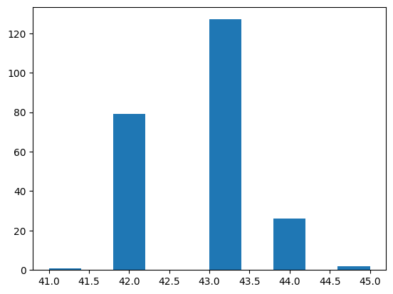

Using PyTorch version: 1.13.1+cpu, Device: cpu
Using torchtext version: 0.14.1
Load Data
Code
"""Load AG_NEWS dataset and set up the tokenizer and encoder pipeline.Do NOT modify."""train_data, test_data = torchtext.datasets.AG_NEWS(root='./data')tokenizer = get_tokenizer('basic_english')def tokens(data_iter):for _, text in data_iter:yield tokenizer(text)encoder = build_vocab_from_iterator(tokens(train_data), specials=["<unk>"])encoder.set_default_index(encoder["<unk>"])text_pipeline =lambda x: encoder(tokenizer(x))label_pipeline =lambda x: int(x) -1
Code
def collate_batch( batch: List[Tuple[int, str]] ) -> Tuple[torch.Tensor, torch.Tensor, torch.Tensor]:""" Creates a batch of encoded text, label and token length tensors. Question (a) - The input texts in the batch have different lengths. - Complete your code to make them have same length using their average. - This means that the length of token sequence in each batch is determined by the average of token length of all sequences in each batch. - Text tensors are stacked with dimension of (TOKEN_LENGTH, BATCH), for easier process in RNN model. - Token length tensors are used to index the last valid hidden token for classification. Args: batch: list of tuples, each containing an integer label and a text input. - ex) [(3, "Wall St. Bears..."), (4, "Comtes, Asteroids and ..."), ...] - number of tuples in the list is same as BATCH SIZE. Returns: text_list: batch of encoded long type text tensors with size (TOKEN_LENGTH, BATCH) label_list: batch of label tensors with size (BATCH) len_list: batch of token length tensors with size (BATCH) """##### YOUR CODE ##### text_list, label_list, len_list = [], [], []for (_label, _text) in batch: length = torch.tensor(text_pipeline(_text), dtype=torch.int64).size(0) len_list.append(length) AVG_LEN =int(sum(len_list) /len(len_list)) # bankers round 때문에 np.round 대신 사용for (_label, _text) in batch: label_list.append(label_pipeline(_label)) processed_text = torch.tensor(text_pipeline(_text), dtype=torch.int64)if processed_text.size(0)>= AVG_LEN: processed_text = processed_text[:AVG_LEN]else: processed_text = torch.cat([processed_text,torch.zeros(AVG_LEN - processed_text.size(0))]) text_list.append(processed_text) text_list = torch.stack(text_list, dim =1).long() label_list = torch.tensor(label_list, dtype=torch.int64) len_list = torch.tensor(len_list)assert text_list.size(1) ==len(batch)return (text_list, label_list, len_list)#####################
Code
"""Load the data loader.Do NOT modify."""BATCH_SIZE =512train_dataset = to_map_style_dataset(train_data)test_dataset = to_map_style_dataset(test_data)train_dataloader = DataLoader(train_dataset, batch_size=BATCH_SIZE, shuffle=True, collate_fn=collate_batch)valid_dataloader = DataLoader(test_dataset, batch_size=BATCH_SIZE, shuffle=False, collate_fn=collate_batch)
Code
"""Print out the first batch in the train loader.Check if the collate function is implemented correctly.Do NOT modify."""batch_x, batch_y, len_x =next(iter(train_dataloader))print(batch_x[:10])print(batch_y[:10])print(len_x[:10])
"""Plot the sequence length distribution of the batches in the train dataloader.Make sure that all batches have difference sequence lengths.Do NOT modify."""batch_len = []for batch_x, _, _ in train_dataloader: seq_len = batch_x.size(0) batch_len.append(seq_len)plt.hist(batch_len)plt.show()

Model
Code
class RNN(nn.Module):def__init__(self, vocab_size: int, input_size: int, hidden_size: int, num_class: int, dropout_ratio: float, ):""" Define the model weight parameters and initialize the weights. Question (b) - Complete the dimension and shape of the weights and biases. - Use the model parameters (vocab_size, input_size, hidden_size, num_class). Args: vocab_size: size of dictionary of vocabularies. input_size: size of each embedding vector. hidden_size: size of hidden dimension. num_class: size of output classes. dropout_ratio: probability of an element to be zeroed. """super(RNN, self).__init__()##### YOUR CODE ##### whh_size = (hidden_size, hidden_size) wxh_size = (hidden_size, input_size) why_size = (num_class, hidden_size) bhh_size = (hidden_size ,1) bxh_size = (hidden_size, 1) bhy_size = (num_class, 1)##################### kwargs = {'device': DEVICE, 'dtype': torch.float}self.dropout = dropout_ratioself.hidden = hidden_sizeself.num_class = num_classself.embedding = nn.Embedding(vocab_size, input_size)self.W_hh = nn.parameter.Parameter(torch.empty(whh_size, **kwargs))self.W_xh = nn.parameter.Parameter(torch.empty(wxh_size, **kwargs))self.W_hy = nn.parameter.Parameter(torch.empty(why_size, **kwargs))self.b_hh = nn.parameter.Parameter(torch.empty(bhh_size, **kwargs))self.b_xh = nn.parameter.Parameter(torch.empty(bxh_size, **kwargs))self.b_hy = nn.parameter.Parameter(torch.empty(bhy_size, **kwargs))self.init_parameters()def init_parameters(self):""" Initialize the parameters with Kaiming uniform initialization. Do NOT modify this method. """ nn.init.kaiming_uniform_(self.W_hh, a=math.sqrt(5)) fan_in, _ = nn.init._calculate_fan_in_and_fan_out(self.W_hh) bound =1/ math.sqrt(fan_in) nn.init.uniform_(self.b_hh, -bound, bound) nn.init.kaiming_uniform_(self.W_xh, a=math.sqrt(5)) fan_in, _ = nn.init._calculate_fan_in_and_fan_out(self.W_xh) bound =1/ math.sqrt(fan_in) nn.init.uniform_(self.b_xh, -bound, bound) nn.init.kaiming_uniform_(self.W_hy, a=math.sqrt(5)) fan_in, _ = nn.init._calculate_fan_in_and_fan_out(self.W_hy) bound =1/ math.sqrt(fan_in) nn.init.uniform_(self.b_hy, -bound, bound)def forward(self, inputs: torch.Tensor, length: torch.Tensor) -> torch.Tensor:""" Question (c) - Randomly initialize h_0 with appropriate shape. - Pass a sequence of tokens into the recurrent network. - Implement dropout to embedded tokens with the given probability (self.dropout). For example, if self.dropout is 0.3, 30% of the embedded tokens will be dropped out. - We do not want to use a hidden cell of a zero-padded token for classification! - Index the hidden cell of the last valid token (excluding the zero-padding) based on the token length of each example in the batch. - Do NOT use pre-defined PyTorch layers for this question. (e.g. nn.RNN, nn.Dropout) Args: inputs: a batch of encoded token sequences with shape (SEQ_LEN, BATCH_SIZE) length: a batch of token lengths with shape (BATCH_SIZE) Returns: Softmax probabilites for each class with shape (BATCH_SIZE, NUM_CLASS) """##### YOUR CODE ##### seq_len = inputs.size(0) batch_size = length.size(0) x_embed =self.embedding(inputs) # (seq_len, batch_size, input_size)# dropout mask = (torch.rand(list(x_embed.size()))<self.dropout) /self.dropout x_embed = mask * x_embed hiddens = [] h_0 =torch.randn(self.hidden, batch_size).to(DEVICE) hidden = h_0 hiddens.append(hidden)# forward 1 for t in np.arange(seq_len): hidden = torch.tanh((torch.matmul(self.W_hh, hidden) +self.b_xh) + (torch.matmul(self.W_xh, x_embed[t,:,:].T) +self.b_hh)).to(DEVICE) hiddens.append(hidden) hiddens_temp = torch.zeros((self.hidden, batch_size)).to(DEVICE) for i in np.arange(batch_size):if length[i] < seq_len: hidden_length = hiddens[int(length[i])] hiddens_temp[:,i] = hidden_length[:,i]else: hidden_length = hiddens[seq_len] hiddens_temp[:,i] = hidden_length[:,i] # Y_pred softmax = nn.Softmax(dim=0) softmax_probs = softmax(torch.matmul(self.W_hy, hiddens_temp) +self.b_hy).permute(1,0)return softmax_probs #####################def compute_loss(self, prediction: torch.Tensor, label: torch.Tensor) -> Tuple[torch.Tensor, int]:""" Question (d) - Compute the cross entropy loss and the number of correct predictions - Do NOT use loss function in torch.nn library (e.g. nn.CrossEntropyLoss()) Args: prediction: output(softmax probabilities) from self.forward function with shape (BATCH_SIZE, NUM_CLASS) label: integer labels of the batch inputs with shape (BATCH_SIZE) Returns: cross entropy loss of the batch (float tensor) and the number of correct predictions (integer) """##### YOUR CODE ##### loss =0 correct =0 batch_size = label.size(0) label_enc = F.one_hot(label, self.num_class) label_enc = label_enc.to(DEVICE) loss =- torch.sum(label_enc * torch.log(prediction)) correct =int((label == prediction.argmax(1)).sum()) loss /= batch_size return (loss, correct)#####################
Training Modules
Code
class ScheduledOptim():""" Learning rate scheduler. Do NOT modify. """def__init__(self, optimizer, n_warmup_steps, decay_rate):self._optimizer = optimizerself.n_warmup_steps = n_warmup_stepsself.decay = decay_rateself.n_steps =0self.initial_lr = optimizer.param_groups[0]['lr']self.current_lr = optimizer.param_groups[0]['lr']def zero_grad(self):self._optimizer.zero_grad()def step(self):self._optimizer.step()def get_lr(self):returnself.current_lrdef update(self):ifself.n_steps <self.n_warmup_steps: lr =self.n_steps /self.n_warmup_steps *self.initial_lrelifself.n_steps ==self.n_warmup_steps: lr =self.initial_lrelse: lr =self.current_lr *self.decayself.current_lr = lrfor param_group inself._optimizer.param_groups: param_group['lr'] = lrself.n_steps +=1
Code
"""Functions for training and evaluating the model.Question (e)- There has been minor changes with the model forward operation and loss computation. Check what has been changed from the train and evaluate functions that we have used previously, and complete the train and evaluate function that works for the current model architecture.- Use the methods of the ScheduledOptim class above to perform necessary operations on the optimizer.- Do NOT change the arguments given to the train, evaluate functions."""def train(model, train_loader, scheduler):##### YOUR CODE ##### model.train() train_loss =0 correct =0 tqdm_bar = tqdm(train_loader)for text, label, length in tqdm_bar: text = text.to(DEVICE) label = label.to(DEVICE) length = length.to(DEVICE) scheduler.zero_grad() class_pred = model(text, length) loss_temp, correct_temp = model.compute_loss(class_pred, label) loss_temp.backward() scheduler.step() train_loss += loss_temp correct += correct_temp scheduler.update() train_loss /=len(train_loader.dataset) train_acc =100.* correct /len(train_loader.dataset)return train_loss, train_acc#####################def evaluate(model, test_loader):##### YOUR CODE ##### model.eval() test_loss =0 correct =0 tqdm_bar = tqdm(test_loader)with torch.no_grad():for text, label, length in tqdm_bar: text = text.to(DEVICE) label = label.to(DEVICE) length = length.to(DEVICE) class_pred = model(text, length) loss_temp, correct_temp = model.compute_loss(class_pred, label) test_loss += loss_temp correct += correct_temp test_loss /=len(test_loader.dataset) test_acc =100.* correct /len(test_loader.dataset)return test_loss, test_acc#####################
Model Training
Code
"""Question (f)- Train your RNN model and obtain the test accuracy of 70%.- Select the input size, hidden size of your choice- Try various optimizer type, learning rate and scheduler options for the best performance.- Visualize your experiments with Tensorboard.- Your TensorBoard results should include Train/Validation Loss and Accuracy."""##### YOUR CODE #####writer = SummaryWriter(log_dir="./logs")EPOCHS =15BATCH_SIZE =512vocab_size =len(encoder) # 95811input_size =45hidden_size =128num_class =4dropout_ratio =0.3learning_rate =0.001train_dataloader = DataLoader(train_dataset, batch_size=BATCH_SIZE, shuffle=True, collate_fn=collate_batch)valid_dataloader = DataLoader(test_dataset, batch_size=BATCH_SIZE, shuffle=False, collate_fn=collate_batch)model = RNN(vocab_size, input_size, hidden_size, num_class,dropout_ratio)model = model.to(DEVICE)optimizer = torch.optim.Adam(model.parameters(), lr=learning_rate)scheduler = ScheduledOptim(optimizer, 5, 0.8)for epoch inrange(1, EPOCHS +1): loss_train, accu_train = train(model, train_dataloader, scheduler) writer.add_scalar("Loss/train", loss_train,epoch) writer.add_scalar("Accuracy/train", accu_train,epoch) loss_val, accu_val = evaluate(model, valid_dataloader) writer.add_scalar("Loss/test", loss_val,epoch) writer.add_scalar("Accuracy/test", accu_val,epoch) lr = scheduler.get_lr()print('-'*83)print('| end of epoch {:2d} | lr: {:5.4f} | train loss: {:8.3f} | train accuracy: {:8.3f} | ''valid accuracy {:8.3f} '.format(epoch, lr, loss_train, accu_train, accu_val))print('-'*83)writer.flush()writer.close()#####################
Reusing TensorBoard on port 6006 (pid 20996), started 1 day, 0:41:02 ago. (Use '!kill 20996' to kill it.)
Code
# Run this cell to upload the result to TensorBoard.dev# Then you will get the shared link.# tensorboard dev upload --logdir 'e:\OneDrive - SNU\(B) 대학원\수업\2022 2학기\데이터사이언스를위한머신러닝과딥러닝\과제4\HW4' --name "MLDL1 HW4" --description "Training results from HW4 RNN Problem" --one_shot